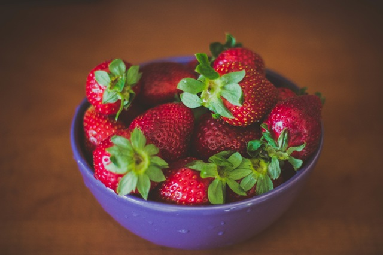
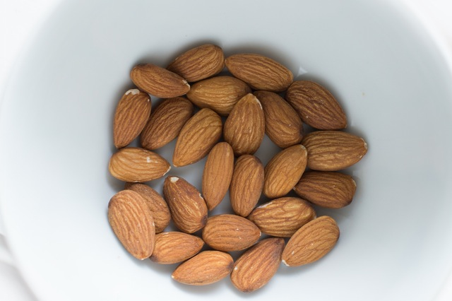

Why Should I Eat Fruit?
Eating fruit is very essential to our body. From personal experience I have gained so many benefits from adding fruit into my daily lifestyle. The number one benefit I gained from eating fruit is having more energy. Eating fruit provided me with so much energy to do more activities as well as being more focused while working on projects. It definitely gives me longevity! Eat More Fruit!!! That is my advice to you!

What's wrong with eating animals?
According to Happy Cow:
"In modern factory farms, animals are routinely injected with hormones and stimulants to make them grow bigger and faster. Many dairy ranchers use recombinant bovine growth hormone (rBGH) to enhance milk production, despite the fact that this chemical - which has been implicated in causing cancer and other diseases - shows up in milk."

So where does my protein come from?
There are plenty of natural foods that provide protein. Here is a list from The Vegetarian Resource Group with the foods amount of protein in grams!
- Soybeans, cooked, 1 cup: 29 grams
- Black Beans, cooked, 1 cup: 15 grams
- Quinoa, cooked, 1 cup: 8 grams
- Veggie burger, 1 patty: 13 grams
- Almonds, 1/4 cup: 8 grams